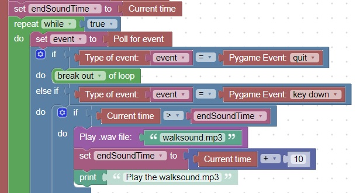

<h1>Play sound and use a timer to make sure it is not played twice</h1>
This code ensure that a sound is not played on top of itself<br>
It uses a variable: endSoundTime which is set the computer time when the time will be finished<br>
<br>
<hr>
<center></center>